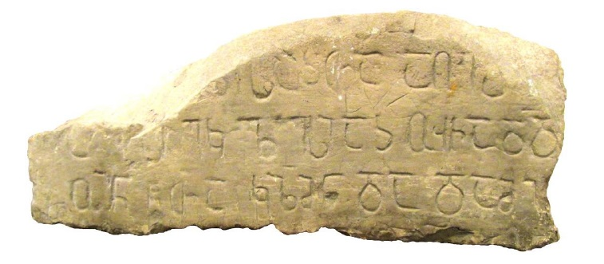

ხუნზახის I წარწერა დაღესტნიდან
შინაარსი / Summary
მოსახსენებელი
ბიბლიოგრაფია Bibliography
კრიტიკული გამოცემა Interpretive Edition
სახელითა ღმრთისაჲთა აღეშ ენა
ესე ეკლესიაჲ უჩად(ა)დონ
წ(მიდა)თა კ(ო)ზმ(ა)ნ და დამი ანეს
სახელსა ზ(ე)დ(ა)
დიპლომატიური გამოცემა Diplomatic Edition
ႱႠႾႤႪႨႧႠ ႶႫႰႧႨႱႠჂႧႠ ႠႶႤႸ ႤႬႠ
ႤႱႤ ႤႩႪႤႱႨႠჂ ႳႹႠႣႣႭႬ
ႼႧႠ ႩႦႫႬ ႣႠ ႣႠႫႨ ႠႬႤႱ
ႱႠႾႤႪႱႠ ႦႣ

ხუნზახის I წარწერა დაღესტნიდან
{'ka': 'ღმერთის სახელით აშენდა ეს ეკლესია წმიდა კოზმან და დამიანეს სახელზე.'}
{'default': 'წარწერის ტექსტი ჯერ კიდევ 1904 წელს გამოაქვეყნა ე. თაყაიშვილმა. მეცნიერის აზრით, წარწერაში აღნიშნულია, რომ ეკლესია ააშენა ვინმე უჩადადონმა წმიდა კოზმასა და \n დამიანეს სახელზე (Такайшвили Е. Грузинские надписи на археологических предметах, хранившихся в Кавказском музее в Тифлисе. \n Известия Кавказского отделения Московского археологического общества. Тифлис, 1904. Вып. I, gv. 56-73). \n დ. ატაევი მიიჩნევდა, რომ ეს წარწერიანი ქვა ნაპოვნი იყო ტად-რაალში (Атаев Д.М. Нагорный Дагестан в раннем средневековье (по материалам археологических раскопок Аварии).\n Махачкала, 1963, 170). მიუხედავად იმისა, რომ ტექსტი XX საუკუნის დასაწყისში გამოქვეყნდა, \n მისი სამყოფელი უცნობი იყო. 2015 წელს შაჰბან ჰაფიზოვს საშუალება ჰქონდა, ემუშავა საქართველოს ეროვნულ მუზეუმში და ქვის ძეგლთა ფონდის გამგის ნ. დათუნაშვილის დახმარებით \n აღმოაჩინა ქართულწარწერიანი ეს ქვა (სხმ #23), რომელიც, სამუზეუმო კატალოგის თანახმად, ჩამოტანილია ხუნზახიდან 1879 წელს \n (საქართველოს სახელმწიფო მუზეუმის ეპიგრაფიკული ძეგლების კატალოგი. თბ., 1953, 9). \n \n შაჰბან ჰაფიზოვი პალეოგრაფიული ნიშნებით წარწერას XII-XIV საუკუნეებით ათარიღებს, თუმცა უფრო მოსალოდნელია მისი მიკუთვნება XIII საუკუნის პირველი ნახევრისადმი.\n ამაზე მიანიშნებს ნ, დ, ო, ლ, წ, ზ ასოების მოხაზულობა. \n\n \n კოზმასა და დამიანეს სახელით მართლმადიდებლურ ეკლესიებში ცნობილნი არიან დაახლოებით III საუკუნის II ნახევარსა და IV საუკუნის I ნახევარში მცირე აზიაში \n (ამჟ. თურქეთის ქალაქ ისკენდერუნში) და სირიაში მოღვაწე წმინდანები. დაუდგენელია ვინმე უჩადადონის სოციალური სტატუსი: \n მშენებლობის ქტიტორი იყო, თუ მხოლოდ ხუროთმოძღვარი? უფრო სარწმუნოა, \n უჩადადონი ყოფილიყო გავლენიანი და მდიდარი ხუნზახელი, შესაძლოა, სარირის სახელმწიფოს მაღალი დონის მოხელე, ანდა, \n რაც უფრო მეტადაა მოსალოდნელი, მართლმადიდებელი ეკლესიის წარმომადგენელი ამ მხარეში. რაც შეეხება პირსახელ უჩადადონ-ის ეტიმოლოგიას, \n ამგვარი ანთროპონიმი უცნობია ქართულ პირსახელთა შორის. ხუნძთა ანთროპონიმიაში შაჰბან ჰაფიზოვმა გამოავლინა მსგავსი ჟღერადობის შემდეგი მამაკაცის \n სახელების გავრცელების ფაქტები ჯერ კიდევ XIX საუკუნის ბოლოსათვის: დადუჩან (სოფ. ბუწრა), დადუჩ (სოფლები ახალჭი, ობოდა, ხუნზახი), \n დადაჩუ (სოფ. ოროტა) და სხვ. ჩანს, უჩადადონ და დადუჩან საერთო წარმომავლობის სახელებია და მიღებულია მეტათეზისის გზით \n (Эльдаров Э.М. Хунзахцы в 1886 году (По итогам первой русской переписи населения Дагестана). Демографический справочник. Махачкала, 2005, 17, 37, 89, 101, 148.). \n ღირსსაცნობია აგრეთვე ისეთი ხუნძური სახელების არსებობაც, რაც, მკვლევრის აზრით, უფლებას იძლევა, დაუშვას უჩადადონ სახელის ორკომპონენტიანობა. \n ეს სახელებია: უჩი (სოფ. ჭოროდა, XV-XVI სს.) (Хапизов Ш. Исламизация южной части горной Аварии (по данным местных арабоязычных источников). \n Историография и источниковедение средневекового Востока. Материалы международного научного симпозиума. Баку, 2012, \n 209) და უჩან (სოფ. ურადა) (Бутаев И.Ч. Гидатль: исторические этюды. Махачкала, 2013, gv. 358). ამრიგად, საკვლევი სახელი ნაწარმოებია მეტსახელ დადუჩ-ისაგან, \n რაც მამის აღმნიშვნელი ალერსობითი ფორმაა (შდრ. აგრეთვე ხუნძური დიალექტური: დადა, დადი, დიდა, დადუ და ა.შ.). \n ხუნზახის I წარწერა რუღჟაბის 1365 წლის წარწერასთან ერთად მეორე ტექსტია, რომელშიც მოთხრობილია მთიან ხუნძეთში ქრისტიანული ეკლესიის მშენებლობის შესახებ.'}
<div type="edition" xml:lang="ka" ana="mtavruli" xml:space="preserve">
<ab>
<lb n="1"/><w lemma="ქრისტე"><expan><abbr>ქ</abbr><ex>რისტ</ex><abbr>ე</abbr></expan></w>
<w lemma="განსუენება"><expan><abbr>გა</abbr><ex>ნ</ex><abbr>ო</abbr><ex>ჳ</ex><abbr>ს</abbr><ex>უ</ex><abbr>ენე</abbr></expan></w>
<w lemma="სულ">სოჳ<lb n="2" break="no"/>ლსა</w>
<name nymRef="ვაჩა">ვაჩაჲს<lb n="3" break="no"/>ასა</name>
<name nymRef="გურა"><expan><abbr>გო</abbr><ex>ჳ</ex><abbr>რაჲ<lb n="4" break="no"/>სასა</abbr></expan></name>
<name nymRef="მირა"><expan><abbr>მ</abbr><ex>ი</ex><abbr>რა</abbr><ex>ჲ</ex><abbr>ს</abbr><ex>ა</ex><abbr>ს</abbr><ex>ა</ex></expan></name>
</ab>
</div>